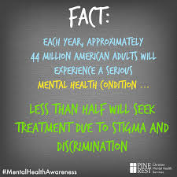
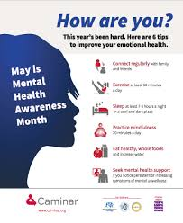
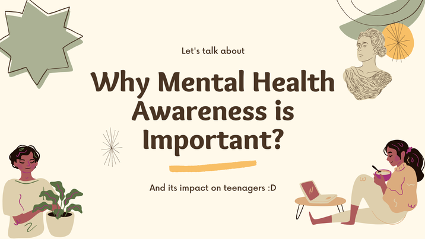
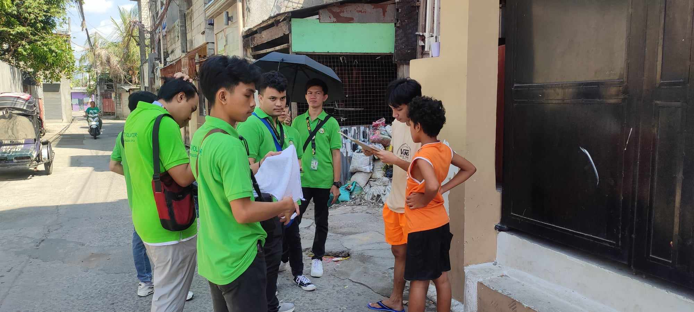

<!DOCTYPE html>
<html lang="en"></html>
<html>

<head>
    <meta charset="UTF-8">
    <meta http-equiv="X-UA_Compatible" content="IE=edge">
    <title> Mental Health Awareness</title>
    <link rel="stylesheet" href="style.css">
</head>
<body>

    <nav class="navbar">
        <h1 class="logo">NSTP</h1>
        <ul class="nav-links">
            <h3 class="active"><a href="#"></a>Home</h3>
            
            <h3><a href="#"></a>Tours</h3>
            
            <h3><a href="#"></a>Explore</h3>
            
            <h3><a href="#"></a>About</h3>
          
            <h3><a class="ctn" href="#"></a>Contact</h3>
        </ul>
       
    </nav> 


    <header>
        <div class="hearder-content">
                <h2>Mental health Awaress Campaign</h2>
                <div class="line"> </div>
                <h1></h1>
                <a href="#" class="ctn">Learn More</a>
        </div> 
        
    </header>
    
    <section class="events">
        <div class="title">
            <h1>About Mental Health</h1>
        </div>
        <div class="row">
            <div class="col">
                
                <h4>Fact:</h4>
                <p>One important fact about mental health awareness is that it aims to reduce stigma and increase understanding of mental health conditions. This includes promoting acceptance and empathy towards those experiencing mental health challenges, encouraging early intervention and treatment, and emphasizing the importance of mental well-being in overall health. Awareness campaigns often highlight the prevalence of mental health issues and promote resources for support and education, aiming to create a more supportive and informed society.</p>
                <a href="#" class="ctn">Learn More</a>
            </div>
        </div>
        <div class="col">
            
            <h4>How are You?</h4>
            <p>When asking "how are you?" in the context of mental health awareness, it shifts the focus to understanding and empathizing with one's mental and emotional state. It encourages a deeper conversation beyond the superficial "I'm fine" response, promoting honesty and openness about mental health challenges. This simple question can be a powerful way to show care and support for someone's well-being, fostering a more compassionate and understanding environment around mental health. It reflects an awareness of the importance of checking in on others' mental health and being willing to listen and offer support when needed.</p>
            <a href="#" class="ctn">Learn More</a>
        </div>
    </section>

    <section class="important">
        <div class="Why_is_Important-content">
            <h1></h1>    
        </div>
        <div class="row">
            <div class="col">
                
                <p>Awareness of mental health is very important because it promotes understanding, reducing the encouragement of empathy. By raising awareness, we can improve the health of people in care, support people suffering from mental illnesses, and promote a more compassionate society.</p>
                <a href="#" class="ctn">Learn More</a>
            </div>
        </div>
    </section>


    <section class="motivation">
        <div class="motivation-content">
            <h1>MOTIVATIONAL QUOTES</h1>
            <div class="line"></div>
        <p>"You don't have to be positive all the time. It's perfectly okay to feel sad, angry, annoyed, frustrated, scared, or anxious. Having feelings doesn't make you a 'negative person.' It makes you human." 
            "Your illness does not define you. Your strength and courage does."
            "You are stronger than you know. More capable than you ever dreamed. And you are loved more than you could possibly imagine."</p>
        </div>
    </section>
    <section class="bible">
        <div class="bible-content">
            <h1>BIBLE VERSE</h1>
            <div class="line"></div>
            <p>"The pain you have been feekiing can't compare to the joy that's coming". -Romans 8:18</p>
            <p>&nbsp;</p>
            <p>"When the time is Rigth, I, the LORd, Will make it happen" -isaiah 60:22</p>
        </div>
    </section>


    <section class="partners">
        <div class="row">
            <div class="col">
                <h1>PARTNERS</h1>
                <p></p>
                <a href="#" class="ctn">Learn More</a>
            </div>
            <div class="col image-col">
                <div class="image-gallery">
                    
                    
                    
                </div>
            </div>
        </div>
    </section>

    <section class="students">
        <div class="student_content">
            <div class="col"></div>
            <h1>NSTP Students</h1>
           <p></p>
         </div>
        <div class="col image-col">
            <div class="image-gallery">
                <a href="#" class="link">
                
                
                ">
                
                
                
                
                </a>
            </div>
        </div>
    </section>

    <section>
        <div class="header">
            <h1>Our FB Link</h1>
        </div>
        <div class="header-background"></div>
        <div class="photo-frame">
            <div class="student-name">Chris Gerreld F. Caballa</div>
            <a class="facebook-link" href="https://www.facebook.com/chrisflores0926?mibextid=ZbWKwL" target="_blank">facebook Link</a>
            <p>&nbsp;</p>
            <div class="student-name">Jay Aldrin O. Rabi</div>
            <a class="facebook-link" href="https://www.facebook.com/profile.php?id=61553795246295&mibextid=ZbWKwL" target="_blank">facebook Link</a>
            <p>&nbsp;</p>
            <div class="student-name">Barlaan Gilbert</div>
            <a class="facebook-link" href="https://www.facebook.com/bertbert.barlaan?mibextid=ZbWKwL" target="_blank">facebook Link</a>
            <p>&nbsp;</p>
            <div class="student-name">Gutierrez, Carl Jansen D.</div>
            <a class="facebook-link" href="https://www.facebook.com/Cj.gutierrez.44?mibextid=ZbWKwL" target="_blank">facebook Link</a>
            <p>&nbsp;</p>
            <div class="student-name">Sotto, Jared Dylan T.</div>
            <a class="facebook-link" href="https://www.facebook.com/jared.sotto.3975?mibextid=ZbWKwL" target="_blank">facebook Link</a>
            <p>&nbsp;</p>
            <div class="student-name">Fermin, Matthew John G.</div>
            <a class="facebook-link" href="https://www.facebook.com/matthew.fermin.5439?mibextid=ZbWKwL" target="_blank">facebook Link</a>
            <p>&nbsp;</p>
            <div class="student-name">Diaz, Mervin A.</div>
            <a class="facebook-link" href="https://www.facebook.com/Smurf.Zed24?mibextid=ZbWKwL" target="_blank">facebook Link</a>
        </div>
    </section>
</section>

</body>

</html>